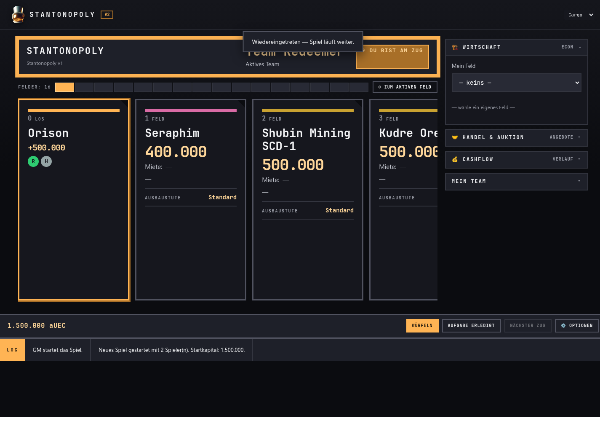
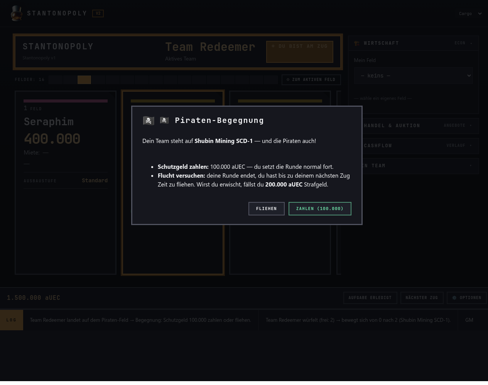
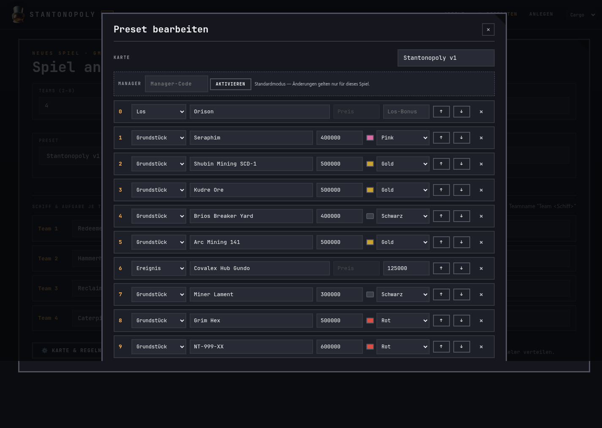
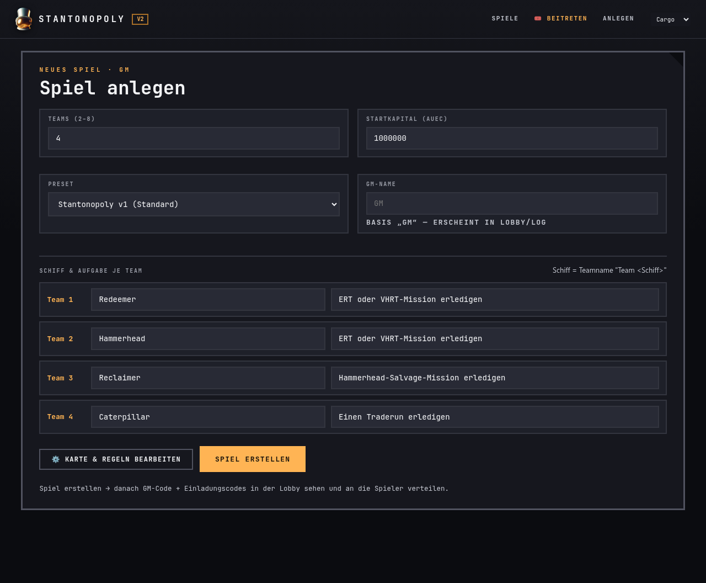

STANTONOPOLYV2
Was du als Spieler, Pirat, Teamleiter, Manager oder GM tun musst — Schritt für Schritt.
👤 Normaler Spieler
1. Einem Spiel beitreten
Der Game Master (GM) erstellt das Spiel und gibt jedem Team einen Einladungscode. Den Code deines Teams erfährst du vom GM. Öffne Stantonopoly, klicke „Mit Code beitreten", gib den Code und deinen Namen ein.

2. Dein Team und die Teamleader-Wahl
Nach dem Beitritt ist dein Team eine Karte in der Lobby mit deinem Namen. Bevor das Spiel startet, stimmt dein Team über den Teamleader ab — das ist die Person, die später bauen und handeln darf.
3. Das Spielfeld: Würfeln und Ziehen
Das Spielfeld ist eine horizontale Kartenreihe — die Orte des Stantonolys. Bist du am Zug, ist oben „DU BIST AM ZUG" zu sehen und der WÜRFELN-Button leuchtet orange. Klicke ihn, um dein Schiff über die Felder zu ziehen.

4. Feld auswerten: Kaufen, Gebühr, Ereignis, Gefängnis
Jedes Feld hat seine Regeln:
| Feldtyp | Was passiert? |
|---|---|
| LOS (Orison) | Beim Überqueren/Erreichen erhältst du +500.000 aUEC. |
| Grundstück (frei) | Du darfst es kaufen (Kaufpreis + Farbgruppe) oder skip. |
| Grundstück (fremd) | Du zahlst Miete an den Besitzer (je Ausbaustufe). |
| Ereignis | Ereignis-Effekt (z. B. Gebühr 125.000 beim Covalex-Hub-Gundo). |
| Steuer | Steuer wird erhoben. |
| Gefängnis | Zahl Freikauf oder sitze Zügen ab (Modal mit Wahl). |
| Frei Parken | Neutral — nichts passiert. |
5. Wirtschaft, Handel & Auktion nutzen
Rechts in der Seitenleiste kannst du:
- Wirtschaft (ECON): Dein Feld auswählen, ausbauen, hypothekieren, abbauen.
- Handel & Auktion: Felder anbieten, auf Angebote antworten, eigene Felder versteigern.
- Cashflow (Verlauf): Alle Geldbewegungen deines Teams einsehen.
6. Zug beenden
Nach deiner Aktion klicke NÄCHSTER ZUG, um ans nächste Team zu übergeben. Das Ziel: das letzte Team mit Vermögen gewinnen.
🏴☠️ Pirat
1. Als Pirat einsteigen
Das Piratenteam ist ein eigenes Team (nicht vom GM gesteuert) und hat seinen eigenen Piraten-Einladungscode. Der GM verteilt ihn. Du trittst damit bei wie bei jedem anderen Team.

2. Was Piraten können — und was nicht
- ✅ Eigene Würfelregel — die Piraten ziehen mit eigener Würfelzahl über das Brett.
- ✅ Schutzgeld kassieren, Fluchten entscheiden (Erwischt/Entwischt).
- ❌ Keine Wirtschaft (keine Felder kaufen/bauen), kein Handel, keine Auktion.
- ❌ Die Piraten können nicht gewinnen — ihr Beutegut zählt nur als Statistik am Ende.
3. Begegnung: Schutzgeld oder Flucht
Landet ein normales Team auf dem Feld der Piraten, öffnet sich ein Entscheidungs-Modal:
- Schutzgeld zahlen: Das Team zahlt den festgelegten Betrag, die Runde läuft normal weiter.
- Flucht versuchen: Das Team ist bis zur nächsten Runde auf der Flucht. Dann entscheidest du als Pirat (im Urteils-Modal): Erwischt (doppeltes Strafgeld) oder Entwischt.

4. Teamleader der Piraten
Wie bei normalen Teams stimmen die Piraten einen Teamleader ab (oder der GM ernennt einen). Der Piraten-Leader führt die Team-Aktionen aus, z. B. das Urteil fällen oder die Piraten ziehen lassen.
👑 Teamleiter
1. Teamleader werden
Vom Team-Vote vor Spielstart oder vom GM per Ernennung. Der Teamleader kann die Rolle jederzeit an ein anderes Teammitglied weitergeben.
2. Deine besonderen Aktionen
| Aktion | Erklärung |
|---|---|
| Ausbauen | Dein Feld in der Wirtschaft auswählen → Ausbaustufe erhöhen (Miete steigt). |
| Hypothek / Abbau | Feld beleihen oder abreißen (Sanierung bei Geldnot). |
| Handel / Auktion | Feld anbieten/verkaufen, auf Angebote antworten, versteigern. |
| Aufgeben (Forfeit) | Aufgeben startet eine Team-Abstimmung. |
3. Wirtschaft im Blick

4. Leader abgeben
Über Mein Team kannst du den Teamleader-Status an ein Mitglied deines Teams übertragen. Gut, wenn du mal keine Zeit hast oder jemand anderes die Wirtschaft übernehmen soll.
🛠️ Manager
1. Wofür ist der Manager da?
Ein normaler Spieler darf im Preset-Editor nur temporär für sein eigenes Spiel ändern („Standardmodus"). Ein Manager kann Presets dauerhaft bearbeiten, neu erstellen und speichern. Den Manager-Code bekommst du als Person vom Admin.
2. Im Preset-Editor einloggen
Beim Spiel-Erstellen öffnest du den Editor über „⚙ Karte & Regeln bearbeiten". Dort unten siehst du die Manager-Bar: Gib deinen Manager-Code ein und klicke AKTIVIEREN.

3. Was ein Manager darf
- Bestehende Presets bearbeiten und speichern (auch eingebaute, die bleiben als Preset erhalten).
- Neue Presets erstellen und dauerhaft speichern.
- Presets deaktivieren (im Spiel-Erstellen nicht mehr wählbar).
- Alle Aktionen werden im Audit-Log des Admins protokolliert (mit deinem Namen).
🎤 Game Master (GM)
1. Ein Spiel erstellen
Klicke „Spiel erstellen", wähle die Anzahl Teams (2–8), ein Preset (z. B. „Stantonopoly v1"), und gib eine Schiffsausstattung je Team an. Optional im Preset-Editor: Piratensystem, Aufgabenregel usw.

2. Codes verteilen und starten
In der Lobby siehst du den GM-CODE („NUR DU") und die Einladungscodes je Team. Verteile die Team-Codes an deine Spieler (und den Piraten-Code ans Piratenteam). Wenn alle drin sind: SPIEL STARTEN.

3. Während des Spiels
- Pausieren / Fortsetzen: Das Spiel anhalten und später weiterlaufen lassen.
- Teamleader ernennen: Falls ein Team streitet, kannst du per GM-Option einen Teamleader bestimmen.
- Beobachten: Du siehst das ganze Brett und die Logs (auch die Piraten-Ansicht).
4. Spielende
Das Spiel endet, wenn nur noch ein Team Vermögen besitzt. Das Endresultat zeigt den Sieger und — falls Piraten aktiv waren — die Piraten-Erbeute als Statistik. Beendete Spiele findest du in der Spiele-Liste (Tab „Abgeschlossen").